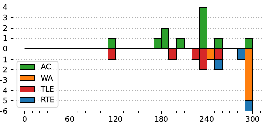

47th ICPC World Finals
Problem authors: Martin Kacer and Arnav Sastry
Solved by 11 teams.
First solved after 113 minutes.
Shortest team solution: 1459 bytes.
Shortest judge solution: 1511 bytes.

This problem can be viewed as a graph problem and solved with either Dijkstra's algorithm or Bellman-Ford. Alternatively, it may be solved with a value iteration algorithm (which, as far as we could tell, was the approach taken by every single team solving this problem). Here we describe the first approach.
Consider a system with 7d states, where each state is a vector v ∈ {1, 2, 3, 4, 5, 6, ∗}d, where vi ∈ {1, 2, 3, 4, 5, 6} means that the i'th dice is currently showing its vi'th side, and vi = ∗ means that we are currently re-rolling the i'th dice. Let us refer to states containing ∗'s as undetermined states, and the remaining states as fixed states.
Initially, we are in the undetermined state (∗, ∗, . . . , ∗) corresponding to our first roll, and our goal is to reach one of the fixed states that correspond to a word in the dictionary (after possibly permuting the coordinates).
From a fixed state, we can for a cost of 0 choose to replace any non-empty subset of the coordinates by ∗ and move to that undetermined state, indicating which dice we choose to reroll. From an undetermined state, the ∗'s will be replaced uniformly at random by digits 1-6 and we will move to that fixed state for a cost of 1 (corresponding to the re-rolling of the dice).
Now we want to make the right choices at all the fixed states in such a way that we reach one of the goal states with minimum possible total expected cost. We can do this by running a variant of Dijkstra's algorithm backwards from the goal nodes. Initially, all states x have a distance of dist[x] = ∞, except the goal states which have a distance of 0, and we process the states in increasing order of distance.
Whenever we process a fixed state x, we have to update the distance of all undetermined states y that match x. Suppose that y has a total of s > 1 ∗'s, and let D be the set of fixed states matching y that have been processed. Then we can update dist[y] to 6s + ∑z∈Ddist[z] |D| (if this is better than the current distance for y); this corresponds to the strategy “keep rerolling these ∗'s until we get to one of the states in D – it takes in expectation 6s/|D| re-rolls to reach a state in D, and since this will be uniformly random its expected distance will be (1/|D|)∑x∈Ddist[z].
To make this fast, we should keep track of |D| and ∑x∈Ddist[z] for each y and not recompute them every time.
Whenever we process an undetermined state x, the situation is simpler and we can simply update each fixed state y that matches x, updating dist[y] to dist[x] (if this is better than current distance for y); this corresponds to the strategy which given y moves to x by changing the corresponding coordinates to ∗.
After running this, the distance for (∗, ∗, . . . , ∗) contains the answer.